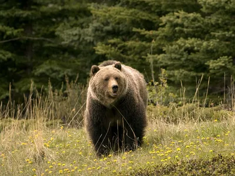
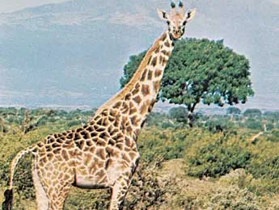
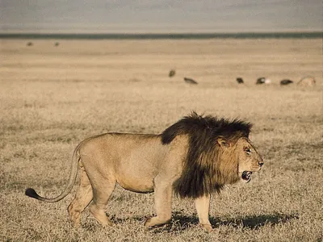

Learn information about our animals at the zoo
Zoo Animals
Bears
Bears are a type of animal that are found in North America, South America, Asia, and Europe. There are many types of bears, including the Brown Bear, Black Bear, Asiatic Black Bear, Polar Bear, Panda Bear, Sun Bear, Sloth Bear, and Andean Bear. Bears are highly social animals and omnivores that eat anything from fish to berries. Bears can range in size and weight depending on the type of bear.
Information about Bears

Giraffes
Giraffes are animals native to Africa that generally live in the savannah. Giraffes are the tallest animal in the world, allowing them to eat leaves from tall trees. They typically do not drink a lot of water, as most of their water comes from the food they eat. Giraffes are also very unique and have different patches on their skin that help people identify them. Just like people have unique fingerprints, the giraffe's patches are unique to that certain giraffe.
Information about Giraffes

Lions
Lions are a species of big cat that are found in Africa and southwest India. Lions usually live in a group called a pride that consists of female lions, their cubs, and a small group of male lions to defend their territories. Lions are able to adapt to their environments, live in dry lands and get some of their water from plants and from the animals they hunt. Lions are very important and there needs to be actions taken to prevent their population from continuing to decline.
Information about Lions

Monkeys
- Cookie
- Earl
- Banana Pudding
Monkeys are primates that are incredibly intelligent and reside in every continent but Antartica and Australia. Many monkeys live in the rainforest and travel between branches in the rainforest's canopy. Monkeys travel in groups called troops and communicate with each other by using body movements, vocalization, and facial expressions.
Information about Monkeys

Alligators
Alligators are a type of reptile that live in North America and Asia. Alligators are closely related to crocodiles, but have a rounder snout and live in freshwater, while crocodiles have a narrow snout and live in saltwater. Alligators are carnivorous and are one of the largest reptiles. They can live up to 50 years in the wild and up to 70 years in captivity.
Information about Alligators
.webp)